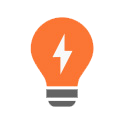
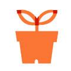

Career
기업의 근간은 사람이라는 것을 잘 알고 있습니다.큰 꿈을 품은 좋은 사람이 끊임없는 도전의 정신으로 자신의 능력을 창조적으로 발휘할 수 있는 든든한 터전을 제공합니다.
인재상

끊임없는 도전과
열정의 개척 정신

창의와 혁신의
유쾌한 공유

자연과 사람에 대한
따뜻한 긍정
복리후생
-
가족친화
-
사내커플 축의금
UZEN에서 평생의 반려자를 만나보세요! 2배로 축하해 드립니다.
-
육아수당
지급만 36개월 이하의 자녀가 있는 직원에게 매월 10만원의 육아수당을 지급합니다.
-
가족 간호 휴직
가족 걱정에 생계 걱정까지 하지 않도록 UZEN에서 휴직을 보장합니다.
-
경조사 지원
경조 종류에 따른 경조금과 경조휴가, 화환(or 조화)을 지원합니다.

-
여가지원
-
Refresh 휴가
3년에 한 번씩 직원들에게 한 달 동안의 유급휴가를
주어 재충전의 기회를 제공합니다.
-
오렌지데이
한 달에 한 번, 가족과의 행복한 시간을 위해
조기퇴근(오후 3시)을 합니다.
-
UZEN CLUB
정기적으로 취미활동을 함께하여 친목을
쌓을 수 있도록 지원합니다.
-
프로젝트 휴가
프로젝트 기간 3개월에 하루씩 연차와 상관없는
휴가가 주어집니다.
-
동호회 지원
UZEN인 누구나 동호회를 만들고
참여할 수 있습니다.
-
자기계발
-
멘토링 제도
직원들간의 멘토링 활동을 통해 업무
역량을 쌓을 수 있도록 지원합니다.
-
교육비 지원
직원들의 직무 능력 향상을 위한 세미나/
컨퍼런스/외부교육비를 지원합니다.
-
도서구매 지원
직무유관 도서를 월 10만원 한도 안에서
지원합니다.
-
자격증 취득 지원
직무 관련 자격증에 대한 전형료/응시료
지원합니다. (단 합격자에 한하여)
-
성과나눔
-
인센티브
영업이익의 일정비율을 성과평가를 통해
전체 직원과 함께 나눕니다.
-
포상제도
직원들의 만족도를 위하여 분기별로
다양한 보상을 제공합니다.
-
선물지급
설날/추석에 선물을
지급합니다.
-
금융지원
-
직원 대출제도
임직원의 생활안정을 위한 자금을 지원합니다.
-
Etc.
-
교통비지원
야근&휴일근무 시 대중교통비
지원합니다.
-
야근식대 지급
평일 석식 및 휴일 식사비
지원합니다.
-
건강검진 지원
만 40세 이상 또는 임원에 한하여 2년에
1회 지원합니다.
-
채용 프로세스
01서류전형
온라인으로 제출된 이력서 및 포트폴리오를 검토합니다.
02면접전형
서류전형 합격자에 한하여 면접을 통해 능력과 자질, 가치관 등을 평가합니다.
03인성검사
면접전형 합격자에 한하여 온라인 인성검사를 실시합니다.
04채용확정
온라인 인성검사 통과 후 처우와 입사일 등을 정하고 최종적으로 채용을 확정합니다.